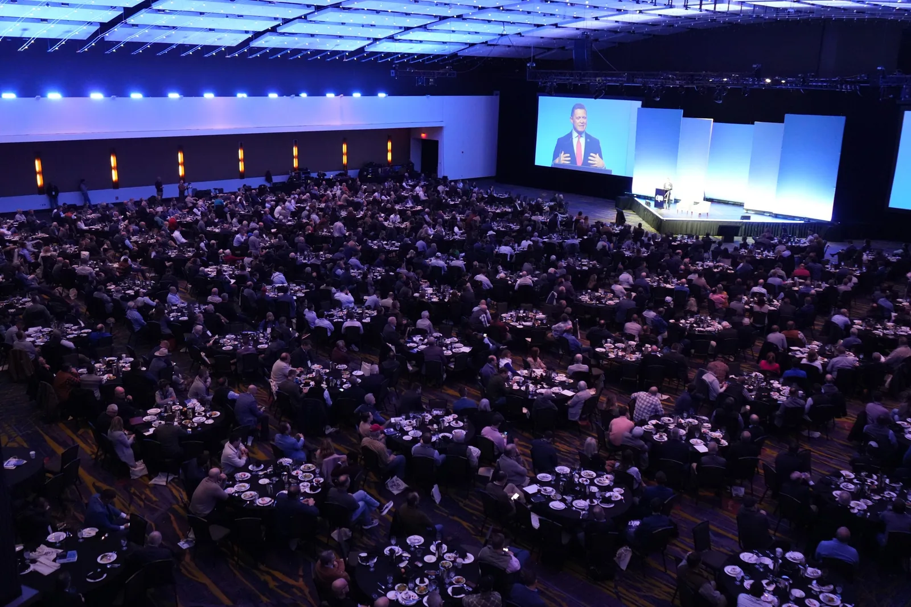
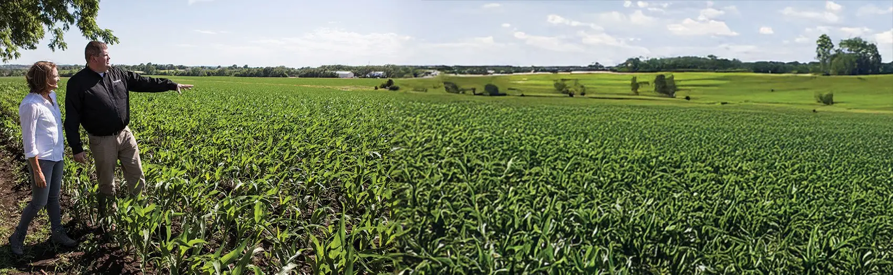
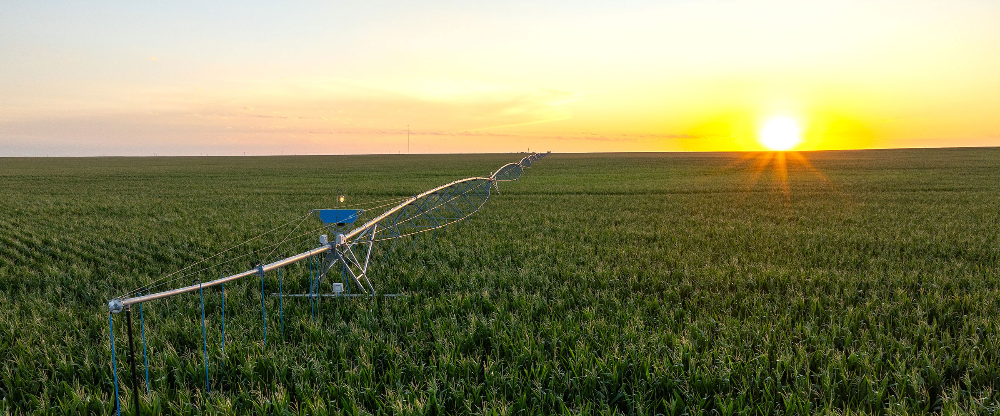
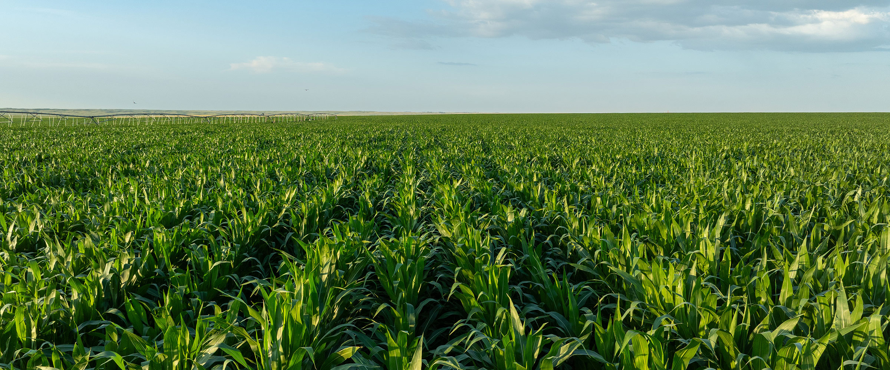
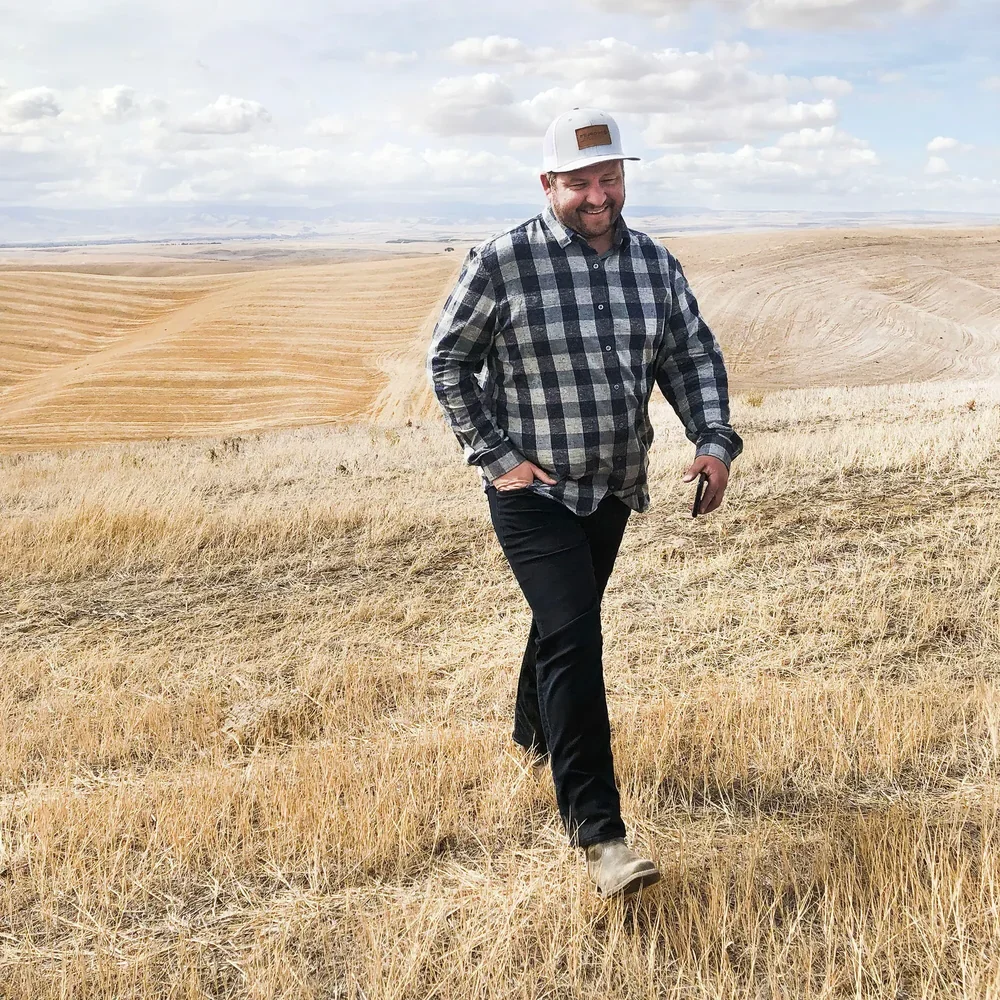
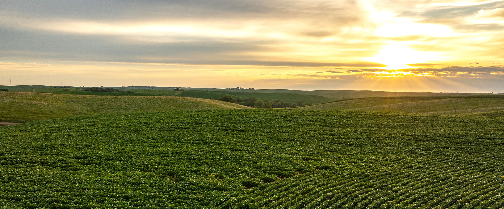
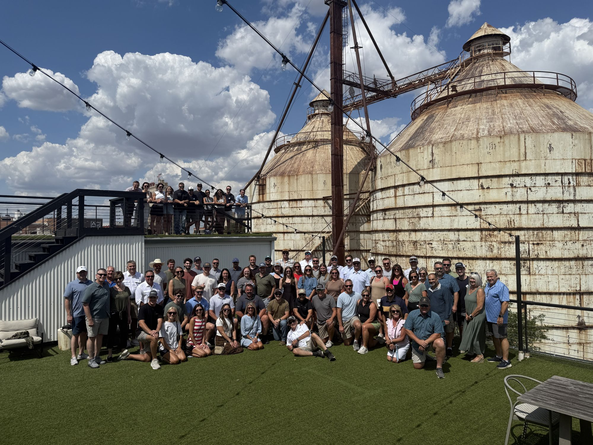
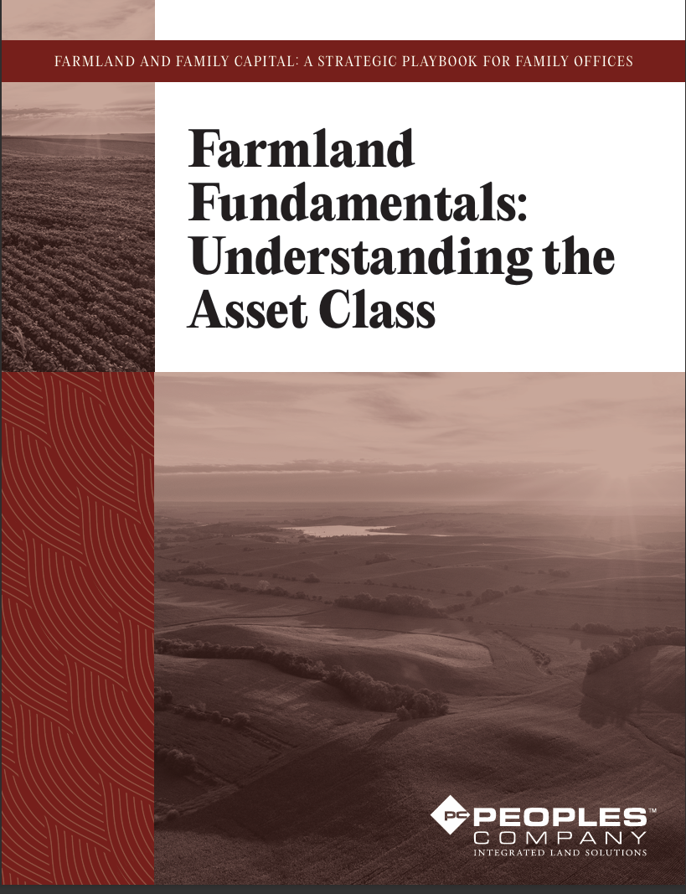
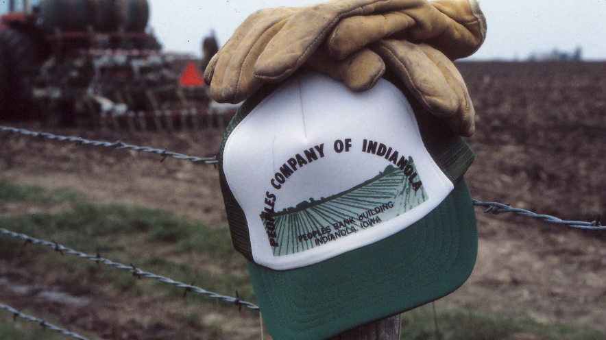

Steve Bruere
PresidentKeynote Speaker
Cumming Office
1108 S. 44th Street, Suite 102
Cumming, IA 50061
- Travels From
- Des Moines, Iowa, USA
- Formats
- Keynote, Breakout, Panel, Studio
- Live Event Fee
- Available on Request
- Virtual Event Fee
- Available on Request
Biography
Steve Bruere is one of the leading experts in agricultural real estate, farmland investment, and farm management. As President of Peoples Company, he has built a nationally recognized firm offering brokerage, management, appraisal, and capital markets services across all major agricultural regions in the U.S. His deep understanding of farmland as an asset class has positioned him as a sought-after voice in the industry, advising institutional investors, wealth managers, and landowners on navigating the evolving agricultural landscape.
Raised in a multigenerational farm family in Iowa, Steve’s connection to farmland began early. His firsthand experience working on the farm shaped his belief that agricultural land is more than just an asset; it’s a long-term investment that requires strategic management and thoughtful stewardship. In 2004, Steve became President of Peoples Company and began to transform the business from a small-town brokerage into a full-service farmland transaction firm serving the largest landowners and investors in the U.S.
In addition to his leadership of Peoples Company, Steve has played a pivotal role in shaping the industry’s most important conversations. In 2008, he founded the Land Investment Expo, an annual forum that has grown into the premier event for farmland investors, policymakers, and industry leaders. To educate the landowner community and provide a resource for agricultural news, Steve founded American Farmland Owner. Both initiatives provide valuable, timely content and insights to farmland stakeholders.
As part of Steve’s long-term goal to expand opportunities in the market, Steve has driven innovative ventures to capitalize on a variety of farmland opportunities. To consolidate digital tools, Steve created a proprietary data exploration toolkit, FarmWorth, which powers Peoples Company’s mapping, data analytics, and farmland insights. As a member of the executive board, Steve provides leadership, experience, and guidance to Farmland Capital Alliance, a coalition-based organization focused on large-scale U.S. farmland ownership, management, and investment. In 2025, Steve co-founded the International Ag Alliance, a global coalition of premier agricultural land firms focused on streamlining international investment and promoting responsible land management.
Steve’s commitment to the future of agricultural land extends beyond investment to sustainability and responsible development. In 2019, just a few miles from his family farm, Steve spearheaded the creation of Middlebrook, Iowa’s first Agrihood: an innovative community integrating agriculture with residential living. His leadership in sustainability also extends to his role as a founding member of Leading Harvest, a national organization promoting responsible land stewardship. Throughout his career, Steve has remained a relentless advocate for farmland owners, shaping the industry with his expertise, vision, and commitment to U.S. agriculture.
Education
University of Northern Iowa, B.A. Marketing, 2003, Cedar Falls, Iowa
Memberships & Affiliations
- REALTORS® Land Institute
- Iowa Commercial Real Estate Association
- Iowa Association of REALTORS®
- National Association of REALTORS®
- National Auctioneers Association
- American Society of Farm Managers and Rural Appraisers
Boards
- President for International Ag Alliance
- Executive Committee Treasurer for the Farmland Capital Alliance
- Iowa Chapter of The Nature Conservancy Board of Trustees
- Chair of Iowa’s Soil and Water Future Task Force
- Past President of the Iowa Chapter of the REALTORS® Land Institute
- Advisory Council for UNI Real Estate Program
References
- Terry Lutz, President, McClure Engineering Co.
- Chris Sackett, Attorney, Brown Winick Law Firm
- Dave Brown, President, IPE 1031 Exchange
- John Frandson, Director, Principal Global Investors
- Bill Hanigan, Attorney, Davis Brown Law Firm
Awards & Recognition
- APEX National Broker
- APEX Top-20
- NAA Marketing Campaign
- NAR Commercial
- RLI Iowa Most Acres
- REALTORS® Land Institute National Broker of the Year in Cropland Sales Category2022
- REALTORS® Land Institute Broker of the Year in Auction Land Sales Category2019, 2020, 2021, 2022, 2025
- Iowa REALTORS® Land Institute Award for “Most Acres Sold”2018, 2019, 2020, 2021, 2022
- National Auctioneers Association “Auction Marketing Campaign of the Year”2018, 2019, 2020, 2022
- REALTORS® Land Institute APEX Top Twenty Producer Award2017, 2018, 2019, 2020, 2021, 2022, 2023, 2024, 2025
- UNI Heritage Honours Young Alumni Award2014
- REALTORS® Land Institute Land Broker of the Year2013
Speaker Profile
Steve Bruere doesn’t just study farmland: he’s built the technology that manages it, founded and sold a company around it, and still farms it himself. As Vice President of Peoples Company, the nation’s leading farm and land real estate firm, Steve oversees asset management strategy for investment-grade farmland on behalf of clients and capital partners, translating decades of price cycles, interest-rate shifts, and land-value data into insight investors can actually use.
A mechanical engineer by training with a PhD from Iowa State University, Steve spent his early career developing advanced biofuel technology with the U.S. Department of Energy before co-founding AgSolver, Inc. in 2013, an agricultural data startup where he created “Precision Business Planning,” a sub-acre analytics framework for optimizing farm income, investor returns, and environmental outcomes. He led AgSolver through its 2017 acquisition by EFC Systems, where he continues to advise on ag-technology integration.
Steve still works his family’s farm in North Central Iowa, where he grew up, a hands-on connection to production agriculture that grounds every talk he gives. He’s a recurring main-stage speaker at the Land Investment Expo and the on-camera expert behind Peoples Company’s farmland education video series, known for turning a historically insider-only asset class into something any audience, from family offices to farm country, can follow and act on.
Speaks On
- Farmland Investment
- Land Values
- Interest Rates & Cap Rates
- Farm Economy History
- Ag Technology & AI
- Consumer & Food Trends
- Land & Energy
Fast Facts
- PhD, Mechanical Engineering, Iowa State University
- Co-founder, AgSolver, Inc. (acquired by EFC Systems, 2017)
- Creator of “Precision Business Planning,” a sub-acre farm analytics framework
- Vice President, Peoples Company: oversees investment-grade farmland asset management
- Active family farmer in North Central Iowa
- Keynote speaker for land and agricultural events across the United States, including the Land Investment Expo
Signature Speaking Topics
Farmland: The $4 Trillion Asset Class Wall Street Still Doesn’t Understand
Farmland isn’t just for farming; it’s one of the largest, least-understood investment categories in the country.
Steve breaks down why farmland behaves differently than stocks, bonds, or commercial real estate, walking audiences through the two engines of farmland return (annual income vs. long-term appreciation), why institutional capital is moving into the space, and what that means for individual investors, advisors, and lenders trying to get ahead of the trend. As a PhD engineer who built his own farm-data company, Steve brings a rare, numbers-first rigor most speakers on this topic don’t have.
Key Takeaways
- Why farmland has quietly outperformed as an asset class for decades
- The 1/3–2/3 breakdown of farmland returns (income vs. appreciation) and why it matters
- Where institutional and family-office capital is moving next, and why
Best For
Investment & wealth management conferences, family office forums, RIA/advisor events
Request This Topic
From Crisis to Comeback: What the 1980s Farm Crisis Teaches Us About Where Land Values Are Headed
History doesn’t repeat, but in farmland, it rhymes, and the pattern is worth knowing before the next cycle turns.
Using the 1980s farm crisis as a case study, Steve connects historical land-value collapses and recoveries to today’s interest-rate environment, showing lenders, landowners, and investors how to read the current cycle instead of being surprised by it. The talk bridges hard history with modern precision-ag and land-tech trends to show how far, and how fast, the industry has evolved.
Key Takeaways
- What actually caused the 1980s farm crisis, and why it’s widely misread today
- How interest rates and land values have historically moved together
- What’s structurally different about today’s farmland market vs. the 1980s
Best For
Ag economy outlooks, banking & ag-lending conferences, commodity and cooperative events
Request This Topic
Cap Rates, Interest Rates, and the Future of Farmland Returns
The macro forces moving every other asset class are moving farmland too; most investors just aren’t watching for it yet.
A data-driven session on how rising and falling interest rates flow through to farmland cap rates and valuations. Originally delivered as a main-stage session at the Land Investment Expo, this talk gives investors and advisors a framework for evaluating farmland deals in the current rate environment, rather than relying on outdated assumptions.
Key Takeaways
- How cap rate compression/expansion has actually played out in farmland vs. other real estate
- A simple framework for stress-testing a farmland deal against rate moves
- What to watch for over the next 12–24 months
Best For
Real estate investment conferences, institutional/REIT audiences, land investor summits
Request This Topic
State of the Farmland Market: Annual Outlook
A fresh, data-backed read on farmland values, refreshed every year for the room it’s delivered to.
A customizable keynote built fresh for each event, pulling the latest land-value data, regional trends, and macro forces into a forward-looking outlook. Ideal for event organizers who want an authoritative, current-year read on the farmland market rather than a static, recycled talk.
Key Takeaways
- Current-year land value trends by region
- What’s driving (or dragging on) demand this cycle
- A practical outlook for the coming 12 months
Technology in Agriculture: Where Are We At and Where Are We Going
Agriculture remains among the least digitized industries in most industry reports: why is that, and how is that changing?
Steve provides perspective that covers the gap between technology development and actual boots-on-the-ground implementation. Audiences are provided the success stories for digitization in agriculture with the on-farm perspective on why these technologies have worked. The challenges for digitizing agriculture are more nuanced and interesting to explore. The integration of AI into agriculture decision making will have a similar profile of successes and challenges. Ideal for event organizers that want to provide their audiences with vision and perspective on how a fast-changing technology landscape will impact agriculture.
Key Takeaways
- Historical perspective on technology deployment in agriculture
- A vision for AI-based acceleration
- Perspectives on ag technology drawing from examples, specifically changes from global battlefields
Consumer Trends Impacting Farmland and Agricultural Production
The consumer market is demanding a different set of characteristics from their food: what is the response and impact moving from low-cost to consumer-connected supply chains?
The ‘Make America Healthy Again’ movement has highlighted a deeper dynamic in global food production; consumers want a robust connection with their food. Steve walks audiences through the commoditization of food production driven by incentives to reduce costs and enhance convenience, and how the current consumer landscape is changing that dynamic. This is creating significant opportunities for agricultural producers and landowners to realize value.
Key Takeaways
- What happened disconnecting the farm from the fork
- Data-driven perspective on more connected supply chains like organically certified products
- Policy drivers that supported commoditization of food and how they are unwinding
Integrating Farmland, Agriculture, and Energy Production
Land is one of the fundamental pillars of all economic development: optimized agricultural systems are being deployed to produce energy along with calories, creating significant opportunity.
A customizable keynote that discusses how energy production has become a core component of farmland and agricultural systems, the policy dynamics that are impacting this integration, and visionary scenarios that may be realized based on pragmatic data analysis. Ideal for event organizers that want to explore the integration of land and energy systems for their audiences.
Key Takeaways
- US feed grain production efficiency has accelerated to the point of diverting calories toward energy production
- Exploring the impact of global regulation on carbon on farmland revenue streams
- Practical scenarios for farmland and agriculture as energy production increases over the coming decades
Speaker Reel

Length ~27 min
Live · Main Stage
2025 Land Expo Main Stage
The latest main-stage session from the Land Investment Expo.
Watch Session
Length ~44 min
Live
2025 Land Expo Breakout Session

Length ~25 min Live 2024 Land Expo Main Stage
Length ~43 min Live / Panel 2024 Land Expo Breakout Session 1
Length ~42 min Live 2024 Land Expo Breakout Session 2
Length ~45 min Live / Panel 2023 Land Expo Breakout Session 1
Length ~47 min Live 2023 Land Expo Breakout Session 2
Length ~33 min Live 2022 Land Expo Main Stage
Length ~4:40 Studio PC Edu Ep. 1: “$4 Trillion Asset Class”
Length ~4:45 Studio PC Edu Ep. 7: Farm Crisis to Modern AgBook Steve to Speak
Tell us about your event and we will follow up on availability.
Booking FAQs
What topics does Steve speak on?
Seven signature talks, listed under Speaking: farmland as an asset class, the 1980s farm crisis and land-value cycles, cap rates and interest rates, the annual State of the Farmland Market outlook, technology in agriculture, consumer trends, and the integration of farmland and energy production.
Can a talk be built for our event?
Yes. The State of the Farmland Market outlook is built fresh for each event with current-year data, and Integrating Farmland, Agriculture, and Energy Production is offered as a customizable keynote.
What formats are available?
Main-stage keynotes, breakout sessions and panels, as delivered at the Land Investment Expo, plus the studio format of Peoples Company’s farmland education series.
How do I check availability?
Send the request form above with your event date, location and audience, or call the Peoples Company office at 855.800.LAND.
Contact Steve
Please use the form to request a comparative market analysis or connect with us about buying, selling, or exploring land opportunities. We’re ready to be your trusted resource.
Available Listings


Sold Listings


Sold
Listing #16675

Sold
Listing #16553

Sold
Listing #15744


Sold
Listing #14064